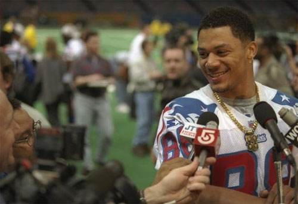

The New England Patriots and Terry Glenn
A Troubled Franchise. For much of their history, the New England Patriots had been a troubled franchise. Nicknamed the “Pats” by supporters and the “Patsies” by detractors, they entered the American Football League as the Boston Patriots in 1960. They had sporadic success in the mid-70s and 80s, including a Super Bowl appearance in 1986. But in the late 1980s its owners, the Sullivan family, lost millions of dollars on business ventures and were forced to sell the team to Victor Kiam (majority owner).
The low-point in the team’s history came in 1990, when it finished a league-worst 1-15 and was implicated in a notorious case of sexual harassment. After a game, several Patriots players verbally assaulted Lisa Olson, a reporter for the Boston Herald . Olson went public, sparking a national discussion about women in male locker rooms and prompting Kiam, the Patriots’ owner, to call her “a classic bitch.” The league launched an investigation, and Commissioner Paul Tagliabue fined Kiam and three players. If the Patriots weren’t league laughingstocks, they were close.

Terry Glenn.
© 1997 Getty Images
Their prospects brightened after the 1992 season when the new owner, James Orthwein, hired legendary coach and two-time Super Bowl champion Bill Parcells. With rookie quarterback and number-one draft pick Drew Bledsoe at the helm, the Patriots won five games. In January of 1994, New England businessman Robert Kraft bought the team. Boston had historically reserved its strongest affections for baseball’s Red Sox, basketball’s Celtics, and hockey’s Bruins, but the Patriots began to attract a large, intense following. All the 1994 games sold out before the season and the team made the playoffs. In 1995, the Patriots drafted Ohio State wide receiver Terry Glenn and signed him to a six-year, $11.6 million contract.
A Controversial Player. It would be difficult to imagine a rookie football player attended by more controversy or playing under more pressure. Glenn was the player his coach didn’t want; owner Kraft had picked him over Parcells’ objections. The pressure only intensified when Glenn missed most of the pre-season and the season opener with a pulled hamstring. Asked in training camp how Glenn was progressing, Parcells said, “She’ll be alright.” This slur on Glenn’s toughness received enormous attention in the media and led callers on talk radio to label him “Teresa.” Throughout his tenure with the Patriots, Glenn would be scrutinized and psychoanalyzed by fans and journalists.
But Glenn recovered and helped the Patriots make the Super Bowl for the second time in its history. In the media furor that accompanied the 1996 Super Bowl (which the Patriots lost), stories focused on Glenn’s tragic past: He never knew his father, and when he was 13, his mother was beaten to death. Journalists cited the experience both to counter claims that Glenn wasn’t tough and to explain his aloofness, which struck some as coldness. “He’s quiet, almost introverted. He doesn’t smile much,” said one reporter. [28] Another quoted Glenn’s high school coach, who said, “The day his mom was killed his life more or less ended. When he lost her, he felt he didn’t have anyone to work for, anyone who’d be proud of him. He kind of shut down and became very introverted.” [29]
In the next two seasons, Glenn was plagued by injuries—a torn hamstring, a sprained ankle, a broken ankle, a scratched eye—and had trouble staying in the lineup. Yet he was a key player. The Patriots, said one story, “can’t live without” a healthy Glenn. [30] The Herald summed up the frustration with his erratic performance:
He has become the Patriots X-factor, the mystery guest, Terry Glenn has. You know the defense is always going to come to play. You know the running game is suspect. You know Ben Coates is going to catch the ball over the middle, and that if Drew Bledsoe gets some time he’s eventually going to make opposing defenses pay. But Glenn? Who really knows? In a sense he’s football’s version of schizophrenia… Are we going to see the Glenn, who has a stadium full of speed and talent, or the Glenn whose [sic] had both his heart and work ethic challenged? [31]
Other Patriot stars were frequent guests on TV and radio shows, but Glenn kept to himself, rarely giving interviews or signing autographs. “Glenn,” said a piece in the Herald ,” is often silent, to the point where many fans don’t even know the sound of his voice.” [32] The 1999 season started off poorly for Glenn and the Patriots. The press began to report that Coach Peter Carroll had lost the confidence of both players and management. Rumors of Carroll’s firing swirled as the Patriots lost six of seven games in the middle of the season to fall out of playoff contention.
There was a sense among reporters and fans that the players were out of control—on a personal as well as a professional level. Early in the season, second-year tight end Rod Rutledge, purportedly drag racing, crashed in a rest stop. He was escorted away from the scene of the accident by starting tight end Ben Coates, who the previous year had been arrested for domestic abuse. Just three years after their appearance in the Super Bowl, the Patriots were in disarray. “The Patriots are now a house of a cards,” wrote one reporter. “All jokers.” [33]
Then on Thanksgiving morning 1999, late for a team meeting, Glenn was stopped by police in Walpole and charged with driving to endanger and driving without a license or registration. Glenn later admitted to drinking too much the night before at a charity function in a Saugus nightclub hosted by Patriot Willie McGinest.
Footnotes
[28] Rich Cimini, “Glenn’s Unlikely Ascension,” New York Daily News, January 26, 1997, p. 65.
[29] Tom Archdeacon, “Troubled Past Stays With Glenn,” Dayton Daily News , January 25, p. 1D.
[30] Karen Guregian, “Actions speak volumes; Pats a different team with Glenn in lineup,” Boston Herald , December 8, 1998, p.91
[31] Bill Reynolds, “Killer Nickname Fits Glenn for what he did to the Oilers,” Providence Journal Bulletin , September 21, 1998, p. 2D.
[32] Steve Buckley, “First and Glenn: In a rare interview, he heralded Patriots receiver discusses receptions, perceptions and deceptions,” Boston Herald , August 29, 1999, p. B20.
[33] Dick Cerasuolo, “Carroll, Pats at a loss; Bring on the new coach restore confidence,” Telegram & Gazette , November 30, 1999, p. D1.